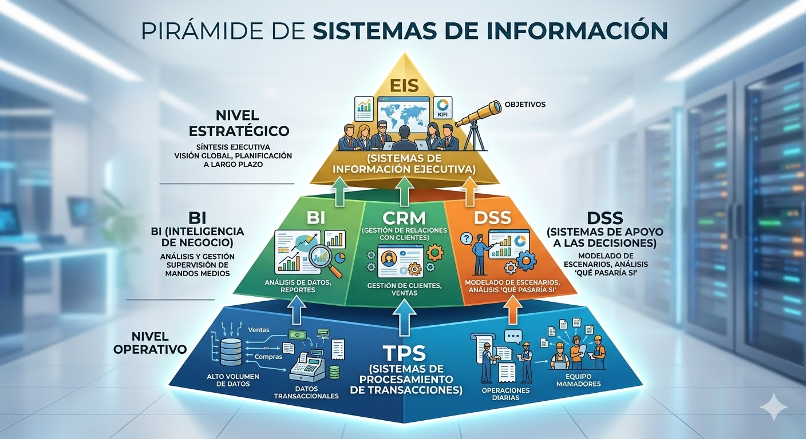
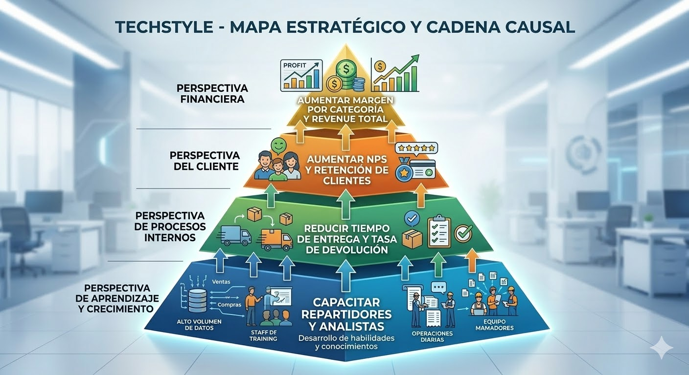

Tipos de SI, CMI, Calidad de Datos y Ética
Semana 2 · W02 · Unidad 1 · Big Data y Analytics
2026-03-01
¿Qué Vimos la Semana Pasada?
- Los datos por sí solos no son útiles → jerarquía dato–información–conocimiento–decisión.
- Un SI tiene 5 componentes: hardware, software, datos, personas, procesos.
- TechStyle tiene 3 niveles organizacionales: Sofía (operativo), Juan (táctico), Roberto (estratégico).
Hoy: ¿Qué tipo de SI sirve a cada nivel? ¿Y cómo alinea la organización sus sistemas hacia la estrategia?
Tipos de Sistemas de Información
| Sistema | Sigla | Nivel | Propósito |
|---|---|---|---|
| Transaction Processing System | TPS | Operativo | Registrar operaciones diarias |
| Business Intelligence | BI | Táctico | Analizar datos históricos |
| Decision Support System | DSS | Táctico/Estratégico | Apoyar decisiones no estructuradas |
| Customer Relationship Mgmt | CRM | Táctico | Gestionar relación con clientes |
| Executive Information System | EIS | Estratégico | Visión global del negocio |
ERP: El Sistema que Integra Todo
¿Qué pasa cuando todos los SI deben hablar entre sí?
- Un ERP (Enterprise Resource Planning) unifica TPS, CRM, logística y finanzas en una sola plataforma.
- En lugar de 5 sistemas desconectados, el ERP tiene módulos integrados: ventas, inventario, RRHH, contabilidad.
- Ejemplos: SAP, Oracle ERP, Microsoft Dynamics.
- TechStyle podría usar el módulo de ventas para el TPS y el módulo de clientes para el CRM, todos compartiendo la misma base de datos.
Ventaja clave: un pedido registrado en ventas actualiza automáticamente el inventario y las cuentas por cobrar.
DSS en Acción: Simulación de Escenarios
¿Cómo apoya el DSS decisiones complejas?
- Roberto debe decidir si abrir 2 nuevos centros de distribución en el norte del país.
- El DSS le permite simular escenarios con datos históricos:
- Escenario A: apertura en La Serena → reducción de 18h en tiempo de entrega, aumento de 12% en ventas proyectadas.
- Escenario B: apertura en Antofagasta → reducción de 24h, aumento de 8% en ventas proyectadas.
- A diferencia del BI (que analiza el pasado), el DSS proyecta hacia el futuro usando modelos de datos.
El DSS no decide: apoya la decisión. Roberto elige, pero con información cuantificada.
TPS vs BI: Las Dos Caras del Dato
| Característica | TPS | BI |
|---|---|---|
| Tiempo | Tiempo real | Histórico (días, meses, años) |
| Operación | Lectura/escritura constante | Solo lectura (consultas) |
| Volumen por consulta | Pocas filas (1 pedido) | Millones de filas (todos los pedidos) |
| Usuario | Sofía (operativo) | Juan (táctico) |
| Pregunta tipo | “¿Se registró el pedido #4821?” | “¿Cuánto vendimos en el Q3 por región?” |
| Base de datos | BD transaccional | Data Warehouse |
No son competidores: el TPS genera los datos que el BI analiza. Son parte de la misma cadena.
La Pirámide de los Tipos de SI

El TPS genera los datos crudos. El BI los transforma en información. El EIS presenta los KPIs estratégicos. La cadena es completa solo si cada eslabón funciona.
Aplicación: Flujo de Datos entre Tipos de SI en TechStyle
¿Cómo se conectan los tipos de SI en la práctica?
- TPS (operativo): registra cada pedido, pago, entrega → genera millones de transacciones
- ETL (noche): extrae y limpia los datos del TPS → carga al Data Warehouse
- BI (táctico): Juan consulta el DW → genera reportes de ventas por zona y categoría
- CRM (táctico): María ve el historial de cada cliente → segmenta la campaña
- EIS (estratégico): Roberto ve en su dashboard los 5 KPIs clave del mes
El fallo en el TPS se propaga hacia arriba: datos incorrectos en la base → KPIs incorrectos en el EIS.
Tipos de SI en TechStyle
- Sofía usa un TPS: registra cada entrega con el estado del pedido en tiempo real.
- Juan usa BI: genera dashboards semanales de ventas por categoría y zona.
- María usa un CRM: ve el historial de compras de cada cliente para segmentar la campaña.
- Roberto usa un EIS: ve en una pantalla la situación global de TechStyle (ventas, NPS, rentabilidad).
Pregunta: ¿Podrían Sofía y Roberto usar el mismo sistema? ¿Por qué no?
Ecosistema Digital: TechStyle Integrado
Todos los sistemas comparten datos, pero cada uno tiene su rol:
- Capa operativa: TPS registra transacciones → datos crudos en BD transaccional.
- Capa de integración: ETL extrae, transforma y carga datos al Data Warehouse cada noche.
- Capa analítica: BI y DSS consultan el DW → reportes y simulaciones.
- Capa de relación: CRM accede a datos del cliente desde el DW y el TPS.
- Capa estratégica: EIS consume KPIs precalculados del DW → dashboard para Roberto.
Problema de integración: si cada sistema usa un formato diferente para “región”, los reportes generan duplicados. → esto es un problema de calidad de datos (lo veremos en breve).
Verificación: ¿Qué SI Necesita Cada Situación?
Clasifica qué tipo de SI sería el más adecuado:
- Un banco que necesita registrar cada transacción de cajero automático en tiempo real → TPS
- El gerente de una cadena de supermercados quiere ver la participación de mercado en una pantalla → EIS
- Un equipo de ventas necesita ver el historial de contacto con cada cliente potencial → CRM
- Un analista quiere comparar las ventas de los últimos 24 meses por región y temporada → BI
- La dirección debe decidir si abrir una nueva sucursal usando datos de demanda proyectada → DSS
El Cuadro de Mando Integral (CMI)
¿Cómo alinea una organización todos sus SI hacia la estrategia?
El CMI (Balanced Scorecard) traduce la estrategia en 4 perspectivas con KPIs medibles:
| Perspectiva | Pregunta clave |
|---|---|
| Financiera | ¿Estamos generando valor para los accionistas? |
| Cliente | ¿Estamos satisfaciendo a nuestros clientes? |
| Procesos Internos | ¿Nuestros procesos son eficientes? |
| Aprendizaje y Crecimiento | ¿Estamos mejorando como organización? |
Historia del CMI: Kaplan y Norton (1992)
¿Por qué fue revolucionario?
- Antes de 1992, las empresas medían su desempeño solo financieramente (ganancias, retorno).
- Robert Kaplan y David Norton (Harvard) publicaron que el desempeño financiero es una consecuencia, no una causa.
- La causa está en los procesos, los clientes y el aprendizaje organizacional.
- El CMI fue adoptado por el 70% de las empresas Fortune 500 en los años 2000.
Para TechStyle: si Roberto solo mira ventas totales, no sabe por qué caen ni cómo recuperarlas.
Mapa Estratégico de TechStyle

El mapa estratégico muestra que la rentabilidad de TechStyle depende de la satisfacción del cliente, que depende de los procesos, que dependen de las capacidades del equipo.
Perspectiva Financiera: ¿Cuánto Generamos?
Responde la pregunta: ¿Estamos creando valor económico sostenible?
- Mide los resultados finales de la estrategia en términos monetarios.
- KPIs típicos: ingresos totales, margen bruto, retorno sobre activos (ROA), crecimiento de ventas.
- En TechStyle: Roberto quiere saber si la expansión al norte fue rentable → KPI: “margen neto por zona geográfica”.
- Limitación: los KPIs financieros son lagging indicators (indicadores rezagados): miden lo que ya ocurrió, no lo que está por ocurrir.
Por eso el CMI agrega las otras 3 perspectivas: para anticipar el resultado financiero futuro.
Perspectiva Cliente: ¿Nos Prefieren?
Responde la pregunta: ¿Estamos satisfaciendo a quienes nos compran?
- Mide la percepción y comportamiento del cliente hacia la empresa.
- KPIs típicos: NPS, tasa de retención, tasa de devoluciones, tiempo de respuesta a reclamos.
- En TechStyle: María quiere saber si los clientes del norte vuelven a comprar → KPI: “tasa de recompra por zona en 90 días”.
- Conexión con financiera: clientes satisfechos recompran → más ingresos → mejora la perspectiva financiera.
Dato del sector: aumentar la retención de clientes en un 5% puede incrementar las ganancias entre 25% y 95% (Bain & Company).
Perspectiva Procesos Internos: ¿Somos Eficientes?
Responde la pregunta: ¿Nuestros procesos operativos crean valor para el cliente?
- Mide la eficiencia y calidad de los procesos que impactan directamente al cliente.
- KPIs típicos: tiempo de ciclo de pedido, tasa de error en picking, % de entregas en tiempo.
- En TechStyle: Sofía sabe que el proceso de despacho en zona sur tiene un cuello de botella → KPI: “tiempo promedio entre confirmación y despacho por bodega”.
- Conexión con cliente: procesos eficientes → entregas a tiempo → clientes satisfechos.
Este es el nivel donde la calidad de los datos del TPS tiene mayor impacto. Un campo mal registrado distorsiona el KPI.
Perspectiva Aprendizaje y Crecimiento: ¿Evolucionamos?
Responde la pregunta: ¿Tenemos las capacidades para mejorar continuamente?
- Mide el desarrollo del capital humano, tecnológico y organizacional.
- KPIs típicos: % empleados con capacitación certificada, índice de satisfacción del equipo, adopción de nuevas tecnologías.
- En TechStyle: el equipo de repartidores no sabe usar la nueva app de tracking → KPI: “% repartidores certificados en la app logística”.
- Conexión con procesos: personas capacitadas → mejores procesos → clientes satisfechos → resultados financieros.
Esta perspectiva es la base de la pirámide: sin aprendizaje, los procesos no mejoran y la estrategia se estanca.
CMI de TechStyle: KPIs por Perspectiva
| Perspectiva | KPI | Fuente de datos |
|---|---|---|
| Financiera | Margen de contribución por categoría | TPS + BI |
| Cliente | NPS (Net Promoter Score) | CRM |
| Procesos | Tiempo promedio de entrega por zona | TPS |
| Aprendizaje | % reclamos resueltos en primera instancia | CRM + DSS |
Conexión clave: Los KPIs del CMI dependen de que los datos del TPS sean correctos.
¿Cómo Definir un Buen KPI? Criterios SMART
Un KPI mal definido produce conclusiones erróneas aunque los datos sean perfectos.
- Specific (Específico): “tiempo de entrega” es vago → “tiempo promedio entre confirmación y firma del cliente, en días hábiles” es específico.
- Measurable (Medible): debe poder calcularse desde datos reales del TPS o CRM.
- Achievable (Alcanzable): una meta de 0% devoluciones no es alcanzable; 3% sí lo es.
- Relevant (Relevante): debe conectarse a una decisión real que alguien tomará.
- Time-bound (Acotado en tiempo): “ventas del Q3 2026”, no solo “ventas”.
Ejercicio rápido: ¿Es SMART el KPI “mejorar la satisfacción del cliente”? ¿Cómo lo mejorarían?
Verificación: ¿A Qué Perspectiva del CMI Pertenece Cada KPI?
Clasifica cada indicador en su perspectiva:
- “Tasa de devolución por zona geográfica” → Procesos Internos
- “Crecimiento de ventas año a año” → Financiera
- “% de empleados con certificación en logística” → Aprendizaje y Crecimiento
- “NPS promedio de clientes nuevos” → Cliente
- “Costo de adquisición de cliente (CAC)” → Financiera / Cliente
El Problema: Bonos Pagados con Datos Incorrectos
Caso real en TechStyle:
Roberto aprobó bonos para el equipo de ventas basados en el KPI “tiempo de entrega promedio = 2,1 días”.
- Al auditar, descubrieron que el TPS registraba “fecha de entrega” cuando el repartidor marcaba “en camino”, no cuando el cliente firmaba la recepción.
- El tiempo real era 3,4 días.
- Los bonos se pagaron por rendimiento ficticio.
Análisis: ¿Dónde Falló la Calidad?
Trazando el fallo hacia su origen:
- Problema raíz: la definición del campo
fecha_entregaera ambigua en el proceso. - Falla en el TPS: el software permitía marcar “entregado” sin validar la firma del cliente.
- Falla en BI: nadie auditó la consistencia del dato antes de usarlo en el KPI.
- Impacto en el CMI: el KPI de “procesos internos” era 60% más optimista que la realidad.
- Impacto financiero: $2,3M en bonos pagados por desempeño que no ocurrió.
Este caso ejemplifica las 4 dimensiones de calidad de datos.
Calidad de Datos: Las 4 Dimensiones
| Dimensión | Pregunta | Problema TechStyle |
|---|---|---|
| Exactitud | ¿El dato refleja la realidad? | Fecha de entrega ≠ fecha real |
| Completitud | ¿Hay campos vacíos? | 12% de clientes sin región |
| Consistencia | ¿El mismo dato dice lo mismo? | “Santiago” vs “Stgo.” vs “RM” |
| Oportunidad | ¿Está disponible cuando se necesita? | Reporte de ventas disponible 3 días después |
Más Allá de las 4 Dimensiones: Unicidad y Validez
La calidad de datos tiene más facetas:
- Unicidad: ¿Existe el dato más de una vez sin deber existir?
- TechStyle tiene el cliente “Ana González” duplicada con dos
cliente_iddistintos → el CRM la contacta dos veces → mala experiencia.
- TechStyle tiene el cliente “Ana González” duplicada con dos
- Validez: ¿El dato sigue las reglas de negocio definidas?
- Un pedido con
cantidad = -3pasa la validación técnica, pero viola la regla de negocio “cantidad debe ser ≥ 1”. - Un
rut = 12345678-9puede ser técnicamente válido pero no corresponder a ningún cliente real.
- Un pedido con
Para recordar: un dato puede ser técnicamente correcto (no vacío, bien formateado) y aun así ser incorrecto para el negocio.
Aplicación: Auditoría de Calidad en el Dataset de TechStyle
Hallazgos reales en techstyle_orders.csv:
- Exactitud: 847 filas con
fecha_entregaanterior afecha_pedido→ imposible, dato incorrecto. - Completitud: columna
regiónvacía en 53.400 filas (12%) → imposible hacer reportes regionales completos. - Consistencia: “Santiago”, “Stgo.”, “RM”, “Región Metropolitana” → 4 representaciones del mismo valor.
- Oportunidad: el reporte de ventas diarias se genera a las 03:00 → María lo recibe a las 10:00 → toma decisiones con datos de ayer.
Verificación: Identifica la Dimensión Vulnerada
¿Qué dimensión de calidad está en riesgo?
- La columna
emailtiene 3.200 registros con el valor “no_email@test.com” → Exactitud - El campo
teléfonoestá vacío en el 40% de los registros → Completitud - El mismo cliente aparece como “Pedro Muñoz” en ventas y “P. Munoz” en el CRM → Consistencia
- Los datos de devoluciones del fin de semana no se cargan al BI hasta el lunes a mediodía → Oportunidad
Impacto de la Mala Calidad de Datos en el CMI
- Exactitud: KPI de tiempo de entrega incorrecto → bonos mal pagados.
- Completitud: 12% clientes sin región → campaña regional incompleta.
- Consistencia: “Santiago” vs “RM” → duplicación en reportes de ventas.
- Oportunidad: Reporte tardío → María toma decisiones con información de hace 3 días.
El Costo Real de la Mala Calidad de Datos
No es un problema menor:
- Gartner estima que la mala calidad de datos cuesta a las organizaciones un promedio de $12,9 millones al año.
- En TechStyle: $2,3M en bonos mal pagados fue solo un incidente en un trimestre.
- Los costos son múltiples: tiempo de corrección, decisiones equivocadas, pérdida de confianza en los datos, riesgo legal.
- El efecto invisible: los analistas de TechStyle pasan el 40% de su tiempo limpiando datos en lugar de analizarlos.
Inversión preventiva: implementar controles de calidad desde el TPS es más barato que corregir los errores semanas después.
Gobierno de Datos: La Solución Organizacional
¿Quién es responsable de la calidad de los datos?
- El gobierno de datos es el conjunto de políticas, procesos y roles que garantizan la calidad y el uso adecuado de los datos.
- Data Owner: el área de negocio responsable de un conjunto de datos (ej: logística es dueña de
fecha_entrega). - Data Steward: el responsable operativo de mantener la calidad (ej: Sofía valida los datos de entrega antes de cerrar el turno).
- Catálogo de datos: diccionario oficial que define qué significa cada campo, quién lo gestiona y cómo se mide su calidad.
Regla de oro: sin gobierno de datos, la calidad depende de la buena voluntad individual → no es escalable.
Ética en el Manejo de Datos
Tres principios fundamentales:
- Transparencia: Los clientes de TechStyle saben qué datos se recopilan y por qué.
- Proporcionalidad: Solo se recopilan los datos necesarios para el servicio (no más).
- Seguridad: Los datos personales de los clientes están protegidos contra acceso no autorizado.
Caso de discusión: TechStyle quiere guardar el historial de ubicación GPS de cada cliente para “personalizar recomendaciones”. ¿Es ético? ¿Es proporcional?
Marco Legal: Ley 19.628 de Protección de Datos en Chile
Lo que TechStyle debe cumplir:
- Los datos personales de clientes solo pueden usarse para el fin declarado al momento de la recopilación.
- El cliente tiene derecho a acceder, modificar y eliminar sus datos.
- Datos sensibles (salud, situación financiera) requieren consentimiento explícito.
- Chile se encuentra en proceso de actualizar esta ley para alinearse con el GDPR europeo.
Implicación para el analista: antes de usar un campo de datos, preguntarse si el cliente consintió ese uso específico.
Dilema Ético: El Caso de Geolocalización
TechStyle analiza implementar rastreo GPS continuo de clientes:
- Argumento a favor: conocer dónde está el cliente permite enviar notificaciones de “tu pedido está a 10 minutos” → mejor experiencia.
- Argumento en contra: recopilar ubicación continua excede el propósito declarado de la compra → viola proporcionalidad.
- Riesgo legal: si ese dato se filtra, TechStyle enfrenta multas y pérdida de confianza masiva.
- Pregunta de diseño: ¿Se puede lograr la misma experiencia rastreando la ubicación del repartidor en lugar de la del cliente?
Principio de privacidad por diseño: la solución menos invasiva que logra el mismo objetivo siempre es la preferida.
El Analista de Datos como Guardián de la Información
El rol del analista va más allá de consultar tablas:
- Antes de usar un dato, preguntarse: ¿para qué fue recopilado? ¿quién autorizó este uso?
- Antes de publicar un reporte, preguntarse: ¿podría este análisis identificar a una persona específica aunque no muestre nombres?
- Ante un hallazgo de calidad, reportarlo al Data Owner aunque nadie lo pida.
- Ante presión para mostrar “mejores números”, negarse a alterar metodologías para producir resultados convenientes.
Integridad analítica: la credibilidad de un analista se construye en años y se destruye en minutos. Los datos no mienten, pero los analistas pueden elegir cómo presentarlos.
Actividad: Dashboard para Tres Usuarios
Power BI – Tres vistas del mismo dataset:
En parejas, construyen en Power BI Desktop tres vistas del techstyle_orders.csv:
- Vista de Sofía (operativa): Mis pedidos del día, estado, dirección.
- Vista de Juan (táctica): Ventas semanales por categoría y zona, gráfico de barras.
- Vista de Roberto (estratégica): KPIs financieros del mes (total ventas, ticket promedio, NPS).
Discusión Grupal: Diagnóstico de TechStyle
Aplicando todo lo visto hoy:
En grupos de 3, respondan las siguientes preguntas sobre TechStyle:
- ¿Qué tipo de SI debería registrar automáticamente la firma digital del cliente al recibir el pedido?
- Si el KPI “NPS = 72” proviene de encuestas solo enviadas a clientes con compras > $50.000, ¿qué dimensión de calidad está vulnerada?
- TechStyle quiere lanzar campañas de remarketing usando datos de navegación web de los clientes. ¿Qué consideraciones éticas y legales deben revisarse?
- Diseña un KPI SMART para la perspectiva “Procesos Internos” del CMI de TechStyle.
Objetivos de Aprendizaje – Semana 2
- Clasificar los tipos de SI (TPS, BI, DSS, CRM, EIS) según nivel organizacional.
- Diseñar un CMI con KPIs para las 4 perspectivas.
- Evaluar la calidad de datos en sus 4 dimensiones.
- Identificar implicaciones éticas del manejo de datos en una organización.
Puntos Clave
- Cada nivel organizacional tiene su tipo de SI adecuado: TPS para Sofía, BI/CRM para Juan y María, EIS para Roberto.
- El CMI conecta la estrategia con datos medibles a través de 4 perspectivas: Financiera, Cliente, Procesos, Aprendizaje.
- La calidad de datos (exactitud, completitud, consistencia, oportunidad) determina la confiabilidad del CMI.
- Un dato incorrecto en el TPS corrompe toda la cadena hasta la decisión estratégica de Roberto.
- La ética en datos no es opcional: la Ley 19.628 exige transparencia, proporcionalidad y seguridad.
Preview del Laboratorio W02
Lab W02 — Parte A: Dashboards por Nivel Organizacional
- En Power BI, crear 3 vistas del dataset de TechStyle para Sofía, Juan y Roberto.
- Cada vista debe mostrar solo la información relevante para ese nivel.
Lab W02 — Parte B: Auditoría de Calidad y CMI
- En Power Query, identificar y cuantificar problemas de calidad en el dataset (nulos, inconsistencias, valores imposibles).
- Diseñar el CMI de TechStyle con 2 KPIs por perspectiva y sus fuentes de datos.
Reflexión Final
“No basta con tener el SI correcto. Los datos que alimentan ese SI deben ser exactos, completos, consistentes y oportunos. De lo contrario, el CMI muestra una realidad que no existe.”
Próxima semana (W03): ¿Qué pasa cuando los datos crecen tanto que los sistemas tradicionales no pueden manejarlos? → Big Data, OLTP, Data Warehouse y ETL.

Big Data y Analytics · USS · 2026